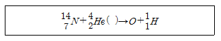
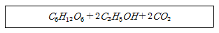

위험물산업기사 (2005-03-06 기출문제)
1과목: 일반화학
1. 20℃에서 NaCl의 용해도는 36이다. 20℃에서 NaCl포화용액인 것은?
- 용액 100g중에 NaCl이 35g 녹아 있을때
- 용액 100g중에 NaCl이 36g 녹아 있을때
- 용액 136g중에 NaCl이 36g 녹아 있을때
- 용액 100g중에 NaCl이 136g 녹아 있을때
(정답률: 76%)

2. 암모니아 합성때 수소 12L와 질소 12L가 반응이 완료된 후 남은 기체의 명칭과 양은 얼마인가?
- H2 , 8L
- N2 , 8L
- N2 , 9L
- 남는 것이 없음.
(정답률: 61%)
3. 미지농도의 염산 용액 100mL를 중화하는데 0.2N NaOH 용액 250mL가 소모되었다. 이 염산의 농도는?
- 0.50N
- 0.25N
- 0.20N
- 0.⑤N
(정답률: 67%)
4. 분자식이 C16H28인 탄화수소의 분자중에는 2중 결합이 몆개 있는가?
- 1개
- 2개
- 3개
- 4개
(정답률: 54%)
5. 비중이 1.2인 6M NaOH 용액의 몰랄농도는?
- 5.76m
- 6.00m
- 6.25m
- 7.89m
(정답률: 42%)
6. Ni(OH)2와 Al(OH)3의 혼합물을 분리시키는데 다음 어떤 시약을 사용하면 좋은가?
- 왕수
- 물
- 황산
- 수산화나트륨
(정답률: 34%)
7. [OH-] = 1×10-5mol/L인 용액의 pH와 액성으로 옳은 것은?
- pH = 5, 산성
- pH = 5, 약알칼리성
- pH = 9, 약산성
- pH = 9, 알칼리성
(정답률: 78%)
8. A는 B 이온과 반응하나 C 이온과는 반응하지 않고 D는 C이온과 반응한다고 할 때 A, B, C, D 이온의 환원력의 세기는?
- B >A >C >D
- D >C >A >B
- B >D >A >C
- C >A >D >B
(정답률: 81%)
9. 다음 작용기 중에서 메틸(methyl)기는 어느 것인가?
- -C2H5
- -COCH3
- -NH2
- -CH3
(정답률: 83%)
10. 콜로이드 용액에 대한 다음 글 중 옳지 않은 것은?
- 콜로이드 용액은 틴들현상을 보인다.
- 콜로이드 입자의 지름은 대략 0.1μ∼1mμ이다.
- 콜로이드 입자는 (+)혹은 (-)로 대전하고 있다.
- 콜로이드 용액은 거름 종이와 투석막을 통과한다.
(정답률: 55%)
11. 다음 화학반응의 속도에 영향을 미치지 않는 것은?
- 촉매의 유무
- 일정한 농도하에서의 부피변화
- 반응물질의 농도변화
- 반응계의 온도변화
(정답률: 70%)
12. 다음 중 잘못된 것은?
- nλ=2dsinθ (Bragg 식)
- P용액 = X용매P°용매(라울의 법칙)
- 1 Faraday ≡ 1몰의 전자
- Π=MRT (삼투압법칙, M=분자량)
(정답률: 47%)
13. 물(H2O)의 끓는점이 황화수소(H2S)의 끓는점 보다 높은 이유는?
- 분자량의 차이 때문
- 분자간의 수소결합 차이 때문
- 용액의 pH 차이 때문
- 극성 결합의 차이 때문
(정답률: 84%)
14. 다음 핵화학반응식에서 산소(O)의 원자번호는 얼마인가?

- 2
- 6
- 8
- 12
(정답률: 80%)
15. 주기율표를 보면 같은 족이 아래로 갈수록 점차 증가하는 성질이 있는데 이에 해당되지 않는 것은?
- 원자번호
- 원자량
- 가전자의 수
- 오비탈의 총수
(정답률: 73%)
16. 다음 반응식은 어떤 과정의 반응인가?

- 에스테르화
- 가수분해
- 축합
- 발효
(정답률: 34%)
17. 다음은 여러가지 이온 반응식이다. 오른쪽으로 진행되는 반응은?
- Pb++ + Zn → Zn++ + Pb
- I2 + 2Cl- → 2I- + Cl2
- Mg++ + Zn → Zn++ + Mg
- 2H+ + Cu → Cu++ + H2
(정답률: 70%)
18. 메탄올의 증기를 300℃에서 구리분말 위에서 공기로 산화시켜 만드는 것으로 자극성 냄새가 나는 기체로서 살균력이 커 방부제나 소독제로 쓰이는 것은?
- 에틸렌글리콜
- 글리세린
- 에틸알코올
- 포름알데히드
(정답률: 56%)
19. 분자를 이루고 있는 원자단을 나타내며 그 분자의 특성을 밝힌 화학식을 무엇이라 하는가?
- 시성식
- 구조식
- 실험식
- 분자식
(정답률: 43%)
20. 과산화수소(H2O2)에 대한 설명으로 틀린 것은?
- 무색의 액체이며, 오존 냄새가 나고 비중은 1.5이다.
- 수용액이 불안하여 금속가루나 수산이온이 있으면 분해한다.
- 표백, 살균 작용을 한다.
- 요오드 칼륨 녹말 종이와 반응하면 붉은색이 된다.
(정답률: 53%)
2과목: 화재예방과 소화방법
21. 소화난이도 등급 Ⅱ의 제조소 및 일반취급소는 연면적이 얼마 이상을 말하는가?
- 500m2
- 600m2
- 1000m2
- 1500m2
(정답률: 32%)
22. 특정옥외저장탱크의 지반의 범위는 지표면으로부터 얼마의 깊이(m) 까지를 말하는가?
- 10
- 15
- 20
- 25
(정답률: 62%)
23. 제1종 분말 소화약제의 주성분은?
- NaHCO3
- NH4H2P04
- Al2(SO4)3
- CO2
(정답률: 75%)
24. 자연발화에 영향을 주는 인자가 아닌 것은?
- 수분
- 분해열
- 발열량
- 열전도율
(정답률: 47%)
25. 공기 중의 산소를 사용하지 않고 자기 연소를 하는 위험물은?
- 톨루엔
- 메틸알코올
- 디에틸에테르
- 니트로글리세린
(정답률: 62%)
26. B급 화재에 사용되는 소화기의 표시 색깔은?
- 황색
- 백색
- 청색
- 색표시없음
(정답률: 84%)
27. 다음 화재 시 적당한 소화 방법으로 틀린 것은?
- 알코올포 - 아세톤
- 탄산가스소화기 - Mg
- 분말소화기 - 인화성액체
- 물소화기 - 산화성고체
(정답률: 42%)
28. 다음 제4류 위험물에 해당하는 물품의 소화방법을 설명한 것으로 잘못된 것은?
- 산화프로필렌 : 알코올형 포로 질식소화한다.
- 아세트알데히드 : 기계포를 이용하여 질식소화한다.
- 이황화탄소 : 탱크 또는 용기 내부에서 연소하고 있는 경우에는 물을 유입하여 질식소화한다.
- 디에틸에테르 : 대량의 포소화제를 사용하거나 CO2 알코올형 포,분말소화제 등을 이용하여 질식소화한다.
(정답률: 32%)
29. 산업 폐기물에서 산화분해되어 화재가 발생한 원인은?
- 과열
- 나화(裸火)
- 자연발화
- 마찰
(정답률: 63%)
30. 칼륨이나 나트륨을 주수하면 발생하는 기체는?
- 수산화나트륨
- 수산화칼륨
- 수소
- 인화수소
(정답률: 75%)
31. 포말소화기의 구성요소가 아닌 것은?
- 탄산수소나트륨
- 황산알루미늄
- 기포안정제
- 사염화탄소
(정답률: 39%)
32. 분말소화약제의 특성인 발부성을 부여하기 위하여 미량첨가하는 물질은?
- 페놀 수지
- 실리콘 수지
- 멜라민 수지
- 요소 수지
(정답률: 57%)
33. 다음 중 연소의 3요소가 아닌 것은?
- 증발원
- 점화원
- 산소공급원
- 가연물
(정답률: 77%)
34. 드라이캐미컬(Dry chemical)을 소화제로 쓸 수 있는 공통 성질은?
- 열분해하면 가스가 발생하여 질식소화한다.
- 열분해하면 흡열 반응을 일으켜 냉각소화한다.
- 고체 용융층이 불꽃심을 덮어 씌운다.
- 공기중의 습기를 다량 흡수하여 주수소화 효과를 낸다.
(정답률: 45%)
35. 다음 중 제6류 위험물이 아닌 것은?
- 질산구아니딘
- 질산
- 할로겐간화합물
- 과산화수소
(정답률: 47%)
36. 준특정옥외탱크저장소는 저장 또는 취급하는 액체위험물의 최대수량이 얼마인가?
- 50만ℓ 미만의 것
- 50만ℓ이상 100만ℓ 미만의 것
- 100만ℓ 이상의 것
- 200만ℓ 이상의 것
(정답률: 69%)
37. 아세톤, 석유류, 알코올류 등의 연소형태는?
- 증발연소
- 분해연소
- 확산연소
- 자기연소
(정답률: 74%)
38. 포소화설비에서 연결송수구 설치수는 얼마인가? (단, 탱크의 최대수평단면적=100m2, 포수용액의방출율=100ℓ/min, 연결송수구 1구당의 표준송액량=800ℓ/min)
- 7
- 10
- 13
- 16
(정답률: 29%)
39. 이산화탄소(CO2)의 주된 소화 효과는?
- 가연물제거
- 인화점인하
- 산소공급차단
- 점화원파괴
(정답률: 82%)
40. 할로겐화합물소화설비에 적응하지 않는 대상물은?
- 전기설비
- 인화성고체
- 제5류위험물
- 제4류위험물
(정답률: 43%)
3과목: 위험물의 성질과 취급
41. 위험물의 폐기작업 과정에서 주의해야 할 항목과 관계가 먼 것은?
- 열 또는 진동이 없는 곳에서 작업한다.
- 땅에 묻을 때 위험물의 종류에 따라 안전한 장소를 택하여야 한다.
- 재해방지 조치를 취한 경우를 제외하고는 바다, 강에 유출 시켜서는 안된다.
- 소각할 때는 반드시 감시원의 감독하에 실시한다.
(정답률: 18%)
42. 아세톤(Aceton)에 관한 설명 중 옳지 않은 것은?
- 무색의 액체로서 특이한 냄새를 가지고 있다.
- 가연성이며 비중은 물 보다 작다.
- 화재 발생시 소화제는 이산화탄소나 포에 의한 소화가 적당하다.
- 알코올, 에테르에는 잘 녹지 않는다.
(정답률: 63%)
43. 다음 물질 중 공기 또는 습기 중에서 위험성이 가장 적은 것은?
- 금속나트륨
- 적린
- 금속칼륨
- 황린
(정답률: 37%)
44. 다음 중 금속나트륨의 보호액으로 적당한 것은?
- 페놀
- 벤젠
- 아세트산
- 에틸알코올
(정답률: 51%)
45. 4류 위험물의 저장 취급시 주의사항으로 바르지 못한 것은?
- 화기 접촉을 금한다.
- 증기의 누설을 피한다.
- 용기는 밀봉하여 냉암소에 저장한다.
- 정전기 축적 설비를 한다.
(정답률: 61%)
46. 개미산 에틸 에스테르의 성질 중 틀린 것은?
- 증기는 다소 마취성이 있으나 독성은 없다.
- 유기 용매와는 자유로이 혼합되며 특히 물과는 혼합되지 않는다.
- 휘발하기 쉽고 인화성인 액체이다.
- 니트로 셀룰로오스용 용제로 사용된다.
(정답률: 39%)
47. 동식물유류를 취급 및 저장할 때 주의사항으로서 옳은 것은?
- 아마인유는 불건성유이므로 자연 발화의 위험이 없다.
- 요오드가가 높은 것이 섬유질에 숨어 들어 있으면 자연발화의 위험이 있다.
- 요오드가가 100 이상인 것은 불건성유이므로 저장할 때 주의를 요한다.
- 일반적으로 인화점이 낮으므로 소화에는 별 어려움이 없다.
(정답률: 60%)
48. 위험물 제조소의 시설에 대한 설명 중 틀린 것은?
- 창유리는 망이 든 유리이여야 한다.
- 바닥의 최저부에 집유설비를 해야 한다.
- 바닥은 콘크리트 등 위험물이 스며들지 아니한 재료로 한다.
- 지정 수량 20배 이상 취급시 피뢰설비를 한다.
(정답률: 65%)
49. 제6류 위험물 중 공기중에서 갈색의 연기를 내며 갈색병에 보관해야 하는 것은?
- 질산
- 황산
- 염산
- 과산화수소
(정답률: 74%)
50. 위험물의 포장 외부 표시방법으로서 틀린 것은?
- 위험물의 품명
- 위험물의 수량
- 위험물의 화학명
- 위험물의 제조 년월일
(정답률: 73%)
51. 금속칼륨의 성질로서 옳은 것은?
- 중금속류에 속한다.
- 화학적으로 이온화 경향이 큰 금속이다.
- 물속에 보관한다.
- 화학적으로 안정한 액체금속이다.
(정답률: 69%)
52. 위험물 제조소등의 안전거리의 단축기준과 관련해서 방화상 유효한 벽의 높이는 H≤PD2+ a인 경우 h=2로 계산한다. 여기서 a는 무엇인가?
- 인접건물의 높이(m)
- 제조소등의 높이(m)
- 제조소등과 방화상 유효한 벽의 거리(m)
- 방화상 유효한 벽의 높이(m)
(정답률: 50%)
53. 제4류 위험물의 소화방법으로 가장 적합한 것은?
- 냉각효과
- 억제효과
- 제거효과
- 질식효과
(정답률: 66%)
54. 적린과 황린의 공통점이 아닌 것은?
- 소화제로는 질식효과가 있는 물, 모래가 좋다.
- 모두 이황화탄소, 수산화나트륨에 잘 녹는다.
- 연소시 P2O5 의 흰 연기가 생긴다.
- 원소는 같은 P 이지만 비중은 다르다.
(정답률: 55%)
55. 트리니트로톨루엔의 성질로 틀린 것은?
- 담황색 결정이다.
- 물에는 녹기 힘들다.
- 보통 피크르산 이라 한다.
- 가열 충격시 폭발하기 쉽다.
(정답률: 40%)
56. 아밀알콜(amylalcohol : C5H11OH)에 대한 설명 중 틀린 것은?
- 아밀알콜에는 8가지 이성체가 있다.
- 어느 것이나 청색으로 투명하며 무취의 액체이다.
- 에테르, 벤젠등 용제에 잘 녹는다.
- 유지, 수지, 셀룰로오즈를 잘 녹인다.
(정답률: 49%)
57. 다음 물질 중에서 공기 중 연소하면 푸른 불꽃을 내며 이산화황이 생성되는 것은?
- 황
- 황린
- 적린
- 마그네슘
(정답률: 50%)
58. 다음 약품중 피부에 대한 부식성이 있고 점화하면 푸른 불꽃을 내면서 연소하는 것은?
- 포름산
- 벤조산
- 아세트산
- 황산
(정답률: 41%)
59. 질산칼륨(KNO3)에 대한 설명 중 옳은 것은 ?
- 칠레초석이라고도 한다.
- 열에 안정하여 1000℃까지도 분해되지 않는다.
- 무색 또는 백색의 결정으로 흑색 화약의 원료로 쓰인다.
- 유기물 및 강산과 혼합하여도 폭발의 위험성은 없으며 매우 안정한 화합물을 만든다.
(정답률: 59%)
60. 표준상태에서 에탄올 2몰(mol)이 금속칼륨과 완전반응할때 발생되는 기체와 부피는?
- 수소, 11.2L
- 수소, 22.4L
- 산소, 11.2L
- 산소, 22.4L
(정답률: 47%)